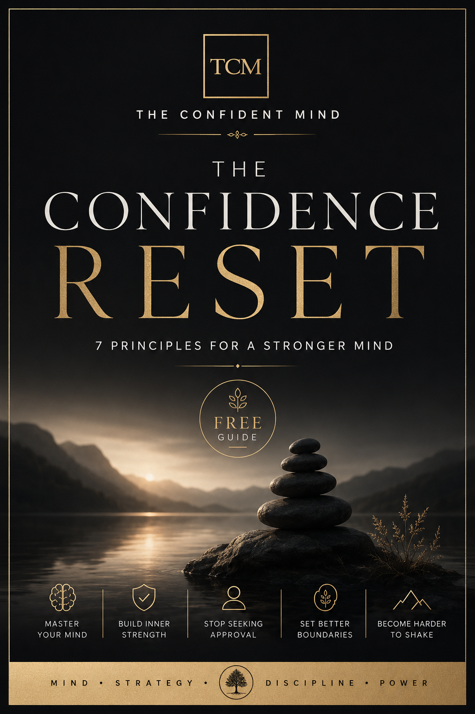
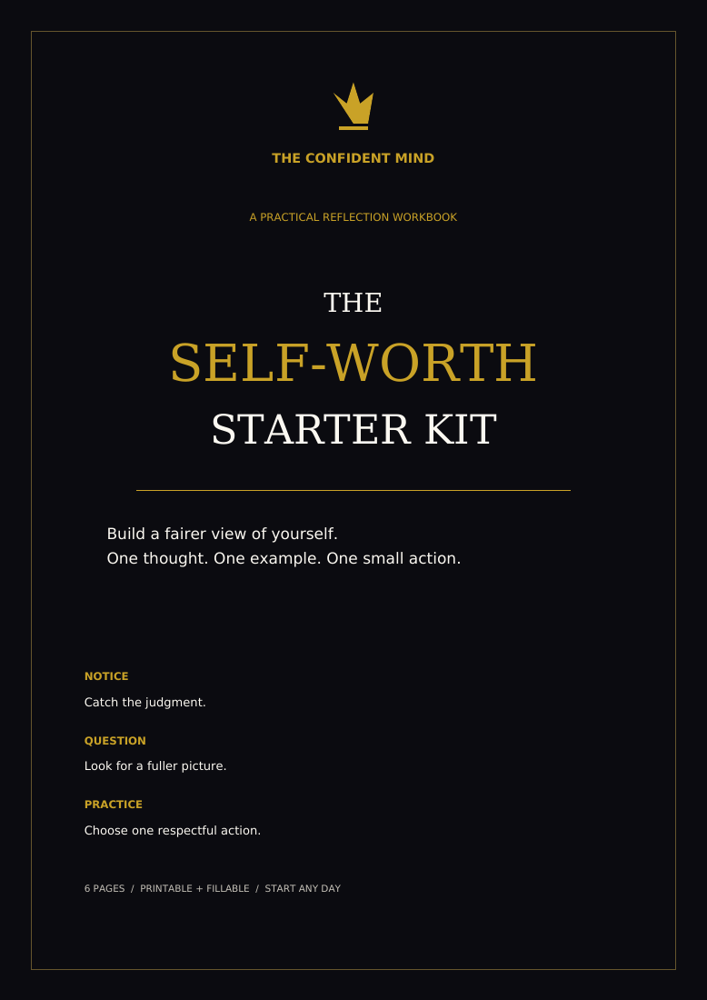
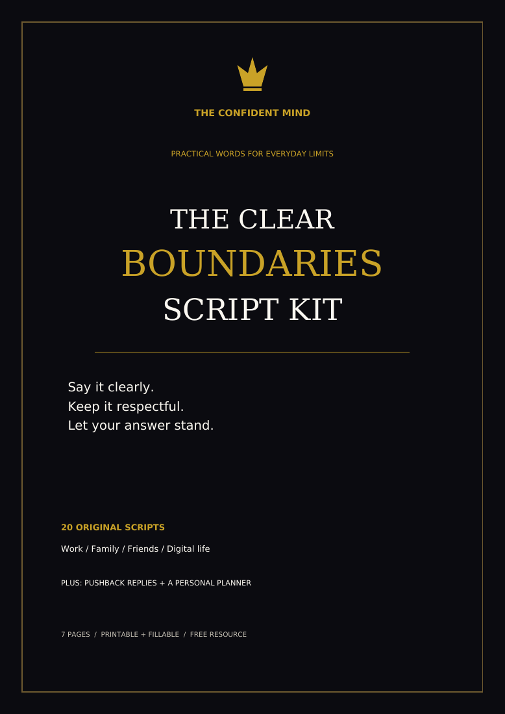

THE FREE RESOURCE LIBRARY
Practical guides.
Small steps forward.
Choose a resource for the change you want to practice: steadier self-trust, clearer boundaries, or a fairer view of yourself.

FREE GUIDE / 7 PRINCIPLES
The Confidence Reset
Build stronger self-trust, communicate more calmly, and set clearer limits without making approval your only compass.
- Recognize the approval trap.
- Practice decisions and boundaries.
- Build evidence of confidence.
Get the Free Guide →Email registration on the signup page.
Explore the seven principles
6-PAGE WORKBOOK
The Self-Worth Starter Kit
Turn reflection into practice with original worksheets for a fairer, more balanced view of yourself.
- Notice and reframe harsh self-talk.
- Recognize overlooked strengths.
- Practice praise, limits, and a weekly plan.
Download Free PDF ↓Direct download. No email required.
Printable and fillable in a compatible PDF reader.
Preview the workbook
NEW / 7-PAGE SCRIPT KIT
The Clear Boundaries Script Kit
Find respectful words for everyday limits, with 20 original scripts you can adapt to your situation.
- Work, family, friends, and digital life.
- Replies to five common objections.
- A fillable personal boundary planner.
Download Free PDF ↓Direct download. No email required.
Printable and fillable in a compatible PDF reader.
Preview the script kit
Inside The Confidence Reset: seven principles
- The Approval Trap. A reaction is one data point; it is not automatically a verdict on whether you were right.
- Stop Outsourcing Your Self-Worth. Let achievement and attention matter without making them the foundation of your worth.
- Learn to Trust Your Decisions. Make decisions with the information you have, set a deadline, and adjust when needed.
- Say No Without Guilt. Guilt is a feeling, not a verdict. A clear no can still be respectful.
- Stop Overexplaining. Clarity says what is true; a decision does not need a defense to be valid.
- Build Evidence of Confidence. Self-trust grows from small promises kept, discomfort handled, and recovery after mistakes.
- Become Harder to Shake. Create space between feeling and action: pause, name, choose, act.
These resources are educational and intended for personal development. They are not diagnostic tools or substitutes for therapy, counseling, or professional mental health care.